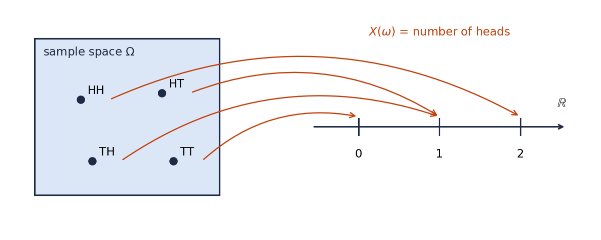
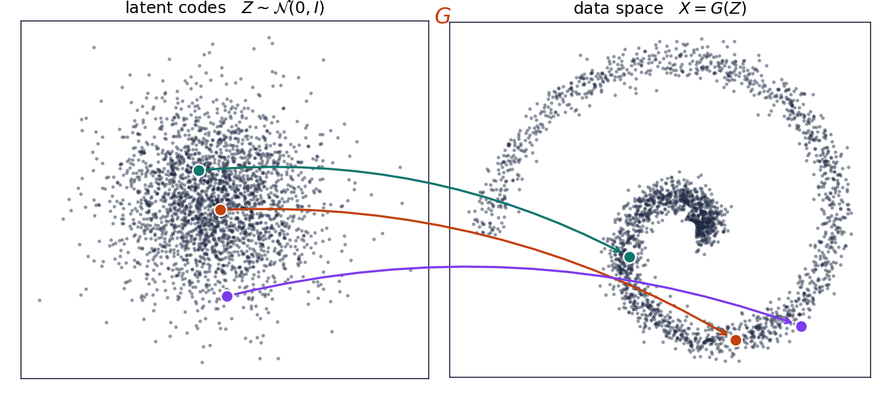
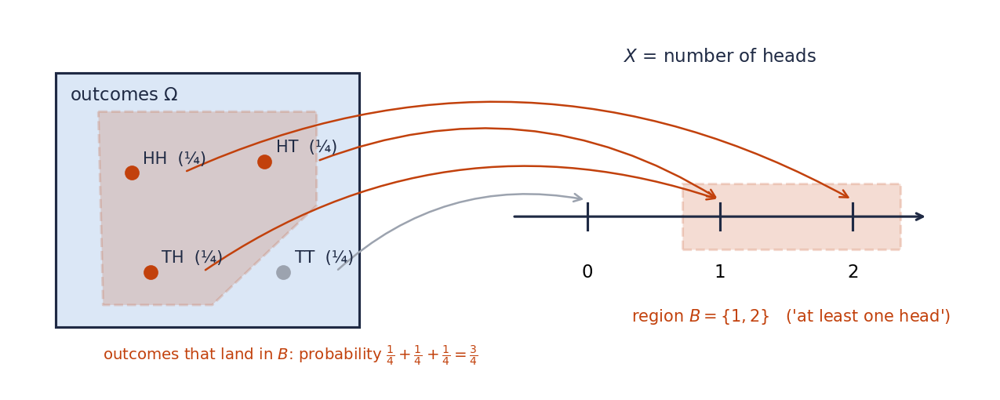
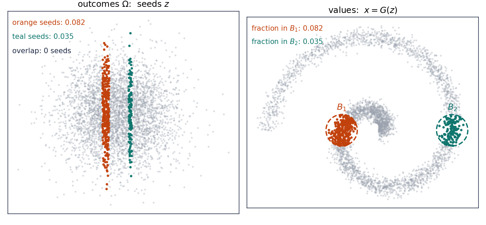
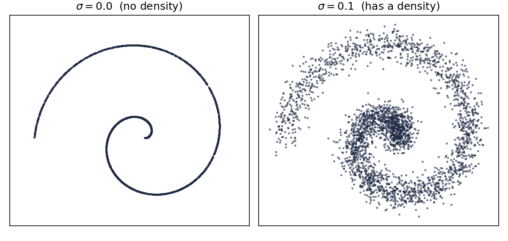

1. Random variables and distributions¶
Part I: Probability foundations. Language for everything afterward.
Prerequisites: the big-picture page, a first course in probability, and some calculus. Most of this note will be familiar. Read it anyway, because it fixes the words we use for the rest of the series, and it takes care with one distinction that will matter later: the difference between a distribution and a density. Diffusion models depend on it.
Intuition¶
A generative model is a random variable.
In note 0 we said that every generative model has two parts: something easy to sample, and a transformation that turns it into data. This note gives those two parts their proper mathematical names, and the names turn out to be old and familiar.
Think about what happens when you sample from a trained image model. The computer draws some random numbers, feeds them into a big function, and out comes an image. The random numbers are the outcome of an experiment. The function turns each outcome into a point in \(\R^d\), where \(d\) is the number of pixels. That is all a random variable is: a rule that turns outcomes into numbers.
We never care which random numbers were drawn. We care about the distribution of the outputs: how likely is it that the image lands in this region of pixel space, or that one. Two models that produce the same distribution of images are, for us, the same model. So this note is about two things: what a random variable is, and what its distribution is.
Math¶
Sample space and events¶
Start with an experiment. The sample space \(\Omega\) is the set of everything that could happen. An event is a set of outcomes, a subset of \(\Omega\). A probability is a rule \(P\) that gives each event a number between 0 and 1.
Example. Toss a coin twice. The sample space is
"At least one head" is the event \(\{HH, HT, TH\}\). With a fair coin, \(P(\{HH, HT, TH\}) = 3/4\).
The rule \(P\) has to satisfy two things: the whole space has probability one, \(P(\Omega) = 1\), and if events do not overlap, their probabilities add. For disjoint \(A_1, A_2, \ldots\),
In this series we will never write down \(\Omega\) for a real model. It is there in the background so that every random variable in a discussion refers to one shared experiment. When we say "\(X\) and \(Y\) are independent" or talk about a whole path \(x_t\) for every time \(t\), we mean that they are all functions of the same outcome \(\omega\).
Random variables¶
Definition 1.1 (Random variable)
A random variable is a function that assigns a number, or a vector of numbers, to each outcome of the sample space:
Example. Toss a coin twice and let \(X\) be the number of heads. Then

Once we have \(X\), we can describe events using it. "At least one head" is \(\{\omega : X(\omega) \ge 1\}\), which we shorten to \(\{X \ge 1\}\). Its probability is written \(P(X \ge 1)\). In general, for any region \(B\) of \(\R^d\),
Example. A generative model with a 2-dimensional latent code. The outcome is \(\omega = (z_1, z_2)\), two random numbers. The random variable is \(X(\omega) = G(z_1, z_2)\), where \(G\) is the network. This is the noise-in, data-out picture from note 0, now with names attached: the noise vector is the outcome, and the transformation is the random variable. Same picture as the coins, with a blob of latent codes on the left and image space on the right.

Left: outcomes, here a cloud of latent codes drawn from a standard Gaussian. Right: the values \(X(\omega) = G(\omega)\), which for our toy model land on the spiral. Three seeds are highlighted with the points they are sent to. Compare with the coin picture: same structure, just a continuous cloud instead of four dots, and a plane instead of a line. Here \(G\) was written by hand. Training a generative model means learning such a \(G\) from data.
The distribution of a random variable¶
There are now two places where probability can live, and it helps to keep them apart.
- On the left: the outcomes \(\Omega\), with the probability \(P\) we started with. For the coins, four outcomes with probability \(1/4\) each.
- On the right: the values in \(\R^d\) that \(X\) can take. For the coins, the numbers \(0, 1, 2\).
The random variable \(X\) is the bridge. It carries each outcome on the left to a point on the right. The question we care about lives on the right: pick a region \(B\) of values; how likely is it that \(X\) lands in \(B\)? But the answer has to be computed on the left, because that is where the probabilities are. Here is the recipe.
- Pick a region \(B\) of values.
- Find all outcomes \(\omega\) that \(X\) sends into \(B\). This set of outcomes is the event \(\{X \in B\}\). It is also called the preimage of \(B\), written \(X^{-1}(B)\).
- Add up the probabilities of those outcomes. That sum is \(P(X \in B)\).
Example. Coins, \(X\) = number of heads, and \(B = \{1, 2\}\), the region "at least one head". Step 2: the outcomes sent into \(B\) are \(HH, HT, TH\). Step 3: \(\tfrac14 + \tfrac14 + \tfrac14 = \tfrac34\). So \(P(X \in B) = 3/4\).

Do this for every region \(B\), and you have described everything there is to know about where \(X\) lands. That description is the distribution.
Definition 1.2 (Distribution)
The distribution of \(X\) is the rule that assigns to every region \(B \subseteq \R^d\) the number
We write \(X \sim P_X\), read "\(X\) is distributed as \(P_X\)".
Example. For the number of heads in two fair tosses, you do not need to go through every possible region. It is enough to do the recipe for the single values \(0\), \(1\), \(2\):
| value \(x\) | 0 | 1 | 2 |
|---|---|---|---|
| outcomes sent to \(x\) | \(TT\) | \(HT, TH\) | \(HH\) |
| \(P(X = x)\) | \(1/4\) | \(1/2\) | \(1/4\) |
For any other region \(B\), add up the entries for the values inside \(B\). So \(P(X \ge 1) = 1/2 + 1/4 = 3/4\), as before. The table is the distribution.
A picture to keep: sand. Imagine the probability \(P\) as one kilogram of sand spread over the outcomes: \(1/4\) kg on each of \(HH, HT, TH, TT\). The function \(X\) picks up every grain and drops it at \(X(\omega)\). Grains from \(HT\) and \(TH\) both land at \(1\), so half a kilogram piles up there; a quarter lands at \(0\) and a quarter at \(2\). The pile on the right is the distribution of \(X\). No sand is lost or created, and the amount of sand inside any region \(B\) on the right is exactly the sand that started inside \(X^{-1}(B)\) on the left. Because the sand is pushed forward along \(X\), the distribution is also called the pushforward of \(P\) through \(X\). Remember this word. In Part VII, "normalizing flow" will mean nothing more than a pushforward through an invertible function.
The same recipe in the continuous case. Here is our toy generative model again. The outcomes on the left are latent seeds \(z\), four thousand of them drawn from a standard Gaussian. The function \(G\) sends them onto the spiral on the right.

Pick the disk \(B_1\) on the right. Which seeds does \(G\) send into it? Exactly the orange ones on the left. That orange set is the preimage \(G^{-1}(B_1)\), and \(P(X \in B_1)\) is the fraction of all seeds that are orange. Counting gives about \(0.08\). You do not need to know anything about \(G\) to read this picture. The only point is that the probability of a region on the right is always measured by a set of seeds on the left. That is Definition 1.2, and it is also how every generative model assigns probability to images.
Discrete and continuous¶
There are two familiar ways to describe a distribution.
Definition 1.3 (Discrete random variable, probability mass function)
\(X\) is discrete if it takes only finitely many or countably many values. Its distribution is described by the probability mass function
Then \(P(X \in B) = \sum_{x \in B} p_X(x)\).
The number of heads is discrete. Its mass function is the table above.
Definition 1.4 (Continuous random variable, probability density function)
\(X\) is continuous if there is a function \(p_X \ge 0\), the probability density function, such that for every region \(B\)
Example. Spin a dial and let \(X\) be the angle it stops at, in \([0, 2\pi)\). Every exact angle has probability zero, \(P(X = x) = 0\), so a mass function is useless. But the probability of landing in an interval is its length divided by \(2\pi\), so \(p_X(x) = 1/(2\pi)\) on \([0, 2\pi)\) and \(0\) elsewhere.
Example. A standard Gaussian in one dimension has \(p_X(x) = \frac{1}{\sqrt{2\pi}} e^{-x^2/2}\). There will be a dedicated section on Gaussians later in Part I, since they appear in almost every formula in this series.
For a real-valued \(X\) there is a third description, the cumulative distribution function
If \(X\) is continuous and \(F_X\) is differentiable, then \(p_X = F_X'\). We will rarely use it.
Distribution versus density¶
Not every random variable is discrete or continuous, and the exceptions are not rare. Here is one that fits in two lines, and it is the shape of every real dataset.
Example 1.6 (Points on a curve have no density)
Let \(\Theta\) be uniform on \([0, 3\pi]\) and let
Every value of \(X\) lies on a spiral curve \(C\). So \(P(X \in C) = 1\).
Now suppose \(X\) had a density \(p_X\). A curve has zero area, and the integral of any function over a set of zero area is zero. So
Contradiction. \(X\) has no density. It is not discrete either: each single point has probability zero.
The same argument works for any data that sits on a lower-dimensional set: a curve in the plane, a surface in space, or, if you believe the manifold hypothesis, natural images inside pixel space. For such data the symbol \(p_{\text{data}}(x)\) does not stand for a function. This is the situation diffusion models start from, and the aside at the end of the derivation says how they get out of it.
So we keep two words apart:
- Distribution means the rule \(B \mapsto P(X \in B)\). Every random variable has one.
- Density means the function \(p_X\) in Definition 1.4. Not every random variable has one.
The diffusion literature uses the two words interchangeably and writes \(p(x)\) for both. We will do the same from Part IV on, once we have seen exactly when it is harmless.
Notation. In Part I, capital \(X\) is the random variable and small \(x\) is a value it might take. From Part IV on we will write \(x_t\) for both, as every paper does.
Derivation¶
1. The distribution is itself a probability¶
Definition 1.2 says the distribution "assigns a number to every region". Definition 1.1 said that to deserve the name probability, such a rule must obey two things: the whole space gets \(1\), and non-overlapping regions add. Does \(P_X\) obey them? If it does, we are allowed to treat \(\R^d\) as a sample space in its own right, with \(P_X\) as its probability, and stop thinking about \(\Omega\). Let us check both rules, in words first and then in symbols.
Rule 1: the whole space gets probability one. Every outcome is sent somewhere in \(\R^d\), so the event "\(X\) lands in \(\R^d\)" is all of \(\Omega\):
Rule 2: non-overlapping regions add. Take two regions \(B_1\) and \(B_2\) on the right that do not overlap, like the two disks in the figure above. Look at their preimages on the left: the orange seeds and the teal seeds. Could a seed be both orange and teal? No. A seed \(z\) has exactly one value \(G(z)\), and that value is in \(B_1\), or in \(B_2\), or in neither. It cannot be in both, because \(B_1\) and \(B_2\) share no points. So the two preimages do not overlap either. (The figure counted: zero seeds in common.)
Now we are back on the left, where \(P\) lives and where we already know that non-overlapping events add. So
In the figure, \(0.082 + 0.035 = 0.117\) is indeed the fraction of seeds in either disk. The same argument works word for word for any number of non-overlapping regions \(B_1, B_2, \ldots\). \(\square\)
In words: every random variable manufactures a new probability on \(\R^d\) out of the old one on \(\Omega\). Take the sand picture: the sand on the right is a perfectly good pile of sand, with total one kilogram, and the sand in two separate regions adds up. A generative model manufactures a probability on images out of a probability on noise in exactly this way.
2. Why we can forget the sample space¶
Suppose you want the average of some function of \(X\), say \(\E[X^2]\) or \(\E[\log p(X)]\). You might think you need to know \(\Omega\) and the function \(X\) in detail. You do not. The distribution is enough.
Proposition 1.5 (Law of the unconscious statistician)
For any function \(f\),
Example. Number of heads, \(f(x) = x^2\): \(\E[X^2] = 0 \cdot \tfrac14 + 1 \cdot \tfrac12 + 4 \cdot \tfrac14 = \tfrac32\). We never looked at \(HH, HT, TH, TT\).
Why it is true. If \(f\) is the indicator of a region \(B\), so \(f(x) = 1\) inside \(B\) and \(0\) outside, then \(\E[f(X)]\) is just \(P(X \in B)\), which is \(\sum_{x \in B} p_X(x)\) or \(\int_B p_X\) by Definitions 1.3 and 1.4. Any reasonable \(f\) can be built from indicators by adding, scaling and taking limits, and both sides of the formula respect adding, scaling and limits. \(\square\)
Expectation gets its own note (note 3). The point here is only this: nothing about \(\Omega\) survives. Learning the distribution of the data is a complete goal.
3. Generative models are pushforwards¶
Now the recipe of note 0, written in the language of this note. Take a simple random variable \(Z\) on \(\R^k\), usually \(Z \sim \N(0, I)\), and a function \(G : \R^k \to \R^d\). Define
\(X\) is a random variable, because it is a function of the outcome: \(\omega \mapsto G(Z(\omega))\). Its distribution is
where \(G^{-1}(B)\) means the set of all seeds \(z\) with \(G(z) \in B\). In words: the probability that the output lands in \(B\) is the probability that the seed lands in the set of seeds that \(G\) sends into \(B\).
Every model in this series is of this form. It is what note 0 called the universal recipe, and the three families described there differ only in \(G\), and in whether we can write down the density of \(X\).
| Model | Simple variable \(Z\) | Function \(G\) | Can we write down \(p_X\)? |
|---|---|---|---|
| Flow, "follow a velocity" (Part VII) | \(\N(0, I)\) | invertible and differentiable | yes, change of variables (note 6) |
| Variational autoencoder, "one shot" (Part III) | \(\N(0, I)\) plus decoder noise | a neural network | only as an integral we cannot compute, so we bound it (note 15) |
| Diffusion model, "many small steps" (Part IV) | \(\N(0, I)\) plus one Gaussian per step | \(T\) learned Gaussian steps | only as an integral we cannot compute, so we bound it (note 21) |
| Diffusion model, rewritten as a flow (Part VI) | \(\N(0, I)\) | solving an ODE, invertible | yes, continuous change of variables (note 32) |
"What is the likelihood of this image under my model" means "does the distribution of \(X\) have a density, and can I evaluate it". The flow row says yes. The diffusion rows say not directly. Getting from the diffusion rows to the flow row is the spine of the series.
Code¶
Our running example is the spiral of Example 1.6, the same spiral that appeared in every figure of note 0. The code below is the random variable. The random number generator plays the role of \(\Omega\), theta is the simple variable \(Z\), and the arithmetic is the function \(G\). Every later note trains a model on samples from sample_spiral.
"""The running example for the whole series: a 2D spiral.
A random variable is a function from a source of randomness to R^d.
Here the source is a NumPy generator and the function is `sample_spiral`.
The *law* of the random variable is what we will spend 45 notes modelling.
"""
import numpy as np
def sample_spiral(n: int, noise: float = 0.0, rng: np.random.Generator | None = None) -> np.ndarray:
"""Draw n points from the spiral law. Returns an (n, 2) array.
noise=0.0 gives points exactly on a curve (no density in R^2).
noise>0 adds isotropic Gaussian noise, which gives the law a density.
"""
rng = np.random.default_rng() if rng is None else rng
theta = rng.uniform(0.0, 3.0 * np.pi, size=n) # base variable Z ~ Uniform
r = 0.15 * theta # deterministic map G
x = np.stack([r * np.cos(theta), r * np.sin(theta)], axis=1)
return x + noise * rng.standard_normal(x.shape)
if __name__ == "__main__":
import matplotlib.pyplot as plt
rng = np.random.default_rng(0)
fig, axes = plt.subplots(1, 2, figsize=(8, 3.8), sharex=True, sharey=True)
for ax, sigma in zip(axes, [0.0, 0.1]):
pts = sample_spiral(3000, noise=sigma, rng=rng)
ax.scatter(pts[:, 0], pts[:, 1], s=2, alpha=0.5, color="#1f2a44")
ax.set_title(rf"$\sigma = {sigma}$" + (" (no density)" if sigma == 0 else " (has a density)"))
ax.set_aspect("equal")
ax.set_xticks([]); ax.set_yticks([])
fig.tight_layout()
fig.savefig("docs/assets/01-spiral.png", dpi=150)
print("saved docs/assets/01-spiral.png")

Left: \(\sigma = 0\). The distribution lives on a curve and, by Example 1.6, has no density. Right: \(\sigma = 0.1\). Adding noise gives the distribution a density; the aside at the end of the derivation explains why. The left panel is what we have. The right panel is what we can learn.
Connection forward¶
- Note 2 defines joint, marginal and conditional distributions, including the distribution of a clean point given a noisy one, which is what every denoiser estimates.
- Note 3 treats expectation properly and never mentions \(\Omega\) again.
- Note 6 computes \(p_X\) for \(X = G(Z)\) when \(G\) is invertible and differentiable. That is the change-of-variables formula, and it is the flow row of the table.
- Note 19 shows the DDPM forward process is repeated Gaussian noising with a shrinking signal, the operation in the aside above.
- Note 26 shows why score matching must be done on the noised distribution: Example 1.6 says the un-noised score need not exist.